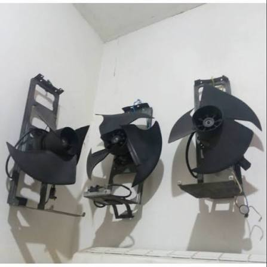

KOLEKSI PRODUK / 02
Kipas Bekas

Ulasan Produk
Kipas angin fungsional dari barang bekas merupakan kreasi daur ulang yang menggabungkan kembali baling-baling, rangka, dan dinamo kipas bekas menjadi sebuah kipas angin mini yang dapat digunakan kembali. Dilengkapi dengan tombol on/off dan kabel colokan, produk ini tidak hanya berfungsi mendinginkan ruangan atau meja kerja, tetapi juga memiliki nilai estetika bergaya industrial. Selain menghemat biaya, proyek ini menjadi solusi dalam mengurangi limbah elektronik rumah tangga.
Alat dan Bahan
Alat : Tidak ada alat yang dibeli.
- Baling-baling kipas bekas.
- Rangka atau dudukan kipas bekas.
- Dinamo (motor listrik) bekas yang masih berfungsi.
- Saklar on/off kecil.
- Kabel listrik serabut secukupnya.
- Stik lem tembak atau lem super.
- Kabel ties atau baut pengencang.
Langkah Kerja
- Siapkan seluruh komponen bekas, lalu bersihkan baling-baling dan rangka dari debu serta kotoran.
- Periksa kondisi dinamo dan komponen lainnya sebelum digunakan.
- Susun kembali dinamo pada dudukan atau rangka kipas dengan bantuan orang yang memahami kelistrikan.
- Pastikan baling-baling terpasang dengan kuat dan sesuai.
- Mintalah bantuan guru atau orang dewasa untuk pemasangan kabel dan saklar on/off.
- Pastikan seluruh sambungan kabel terlindungi dengan baik.
- Periksa keamanan kipas sebelum dilakukan pengujian.
Catatan: Perakitan dan pengujian komponen listrik harus dilakukan dengan pengawasan orang yang memahami kelistrikan. Pastikan menggunakan sumber daya yang sesuai dan seluruh bagian listrik terlindungi.
Estimasi Biaya
A. Biaya Alat
Alat : Rp 0
B. Biaya Bahan
| Nama Bahan | Harga |
|---|---|
| Baling-baling dan rangka kipas bekas | Rp 0 |
| Dinamo bekas | Rp 25.000 |
| Tombol on/off baru | Rp 3.000 |
| Kabel listrik dan colokan bekas | Rp 0 |
| Lem tembak | Rp 3.000 |
| Total | Rp 31.000 |
C. Harga Jual
Harga jual kipas bekas diperkirakan sebesar Rp 45.000 per unit.
D. Laba
Laba bersih per unit = Harga Jual - HPP
Rp 45.000 - Rp 31.000 = Rp 14.000 per unit.
Produk Kreatif dari Barang Bekas
Barang bekas dapat dimanfaatkan kembali menjadi produk yang memiliki nilai guna dan nilai jual. Kipas bekas ini merupakan salah satu contoh kreativitas dalam mengurangi limbah elektronik.
Kembali ke Produk